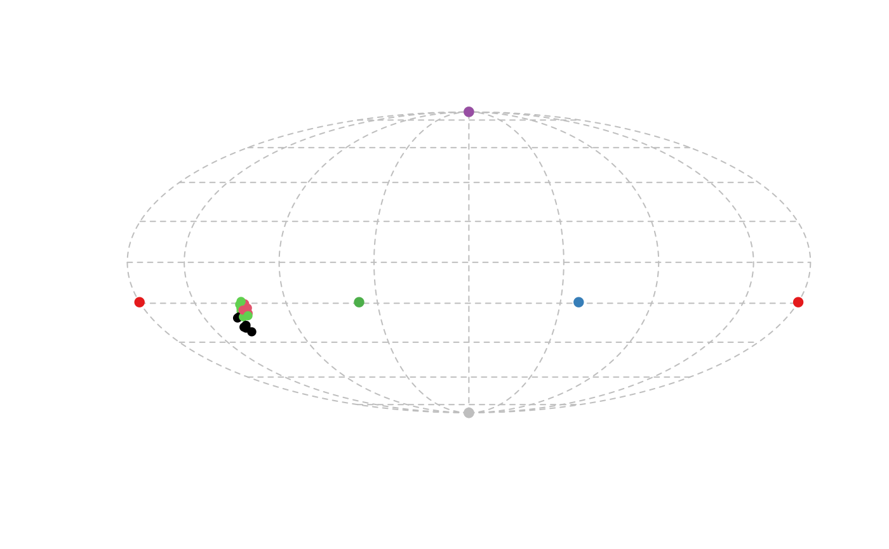

Produces a 2D projection plot of points in a tetrahedral colour space
Adds points to a tetrahedral colorspace projection
projplot(tcsdata, ...) projpoints(tcsdata, ...)
| tcsdata | (required) tetrahedral color space coordinates, possibly a result from |
|---|---|
| ... | additional parameters to be passed to the plotting of data points. |
projplot() creates a 2D plot of color points projected from the tetrahedron
to its encapsulating sphere, and is ideal to visualize differences in hue.
projpoints() creates points in a projection color space plot
produced by projplot().
projplot() uses the Mollweide projection, and not the Robinson projection, which
has been used in the past. Among other advantages, the Mollweide projection preserves area
relationships within latitudes without distortion.
Stoddard, M. C., & Prum, R. O. (2008). Evolution of avian plumage color in a tetrahedral color space: A phylogenetic analysis of new world buntings. The American Naturalist, 171(6), 755-776.
Endler, J. A., & Mielke, P. (2005). Comparing entire colour patterns as birds see them. Biological Journal Of The Linnean Society, 86(4), 405-431.
Rafael Maia rm72@zips.uakron.edu
data(sicalis) vis.sicalis <- vismodel(sicalis, visual = "avg.uv") tcs.sicalis <- colspace(vis.sicalis, space = "tcs") projplot(tcs.sicalis, pch = 16, col = setNames(rep(seq_len(3), 7), rep(c("C", "T", "B"), 7)))